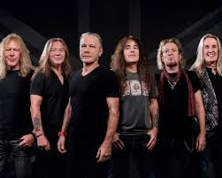

Biografía
Iron Maiden es una banda británica de heavy metal formada en Londres en 1975 por el bajista Steve Harris. Con un sonido potente, letras épicas y una imagen marcada por su icónico personaje Eddie, se convirtieron en una de las bandas más influyentes del metal. Su álbum The Number of the Beast (1982) marcó un antes y un después, impulsando su éxito mundial. A lo largo de las décadas, Iron Maiden mantuvo su estilo inconfundible, giras masivas y millones de seguidores en todo el mundo.
Información detallada
- Origen: Londres, Inglaterra
- Año de formación: 1975
- Género: Heavy Metal / NWOBHM (New Wave of British Heavy Metal)
- Fundador: Steve Harris
- Vocalistas principales: Paul Di’Anno (1978–1981), Bruce Dickinson (1981–1993, 1999–presente)
- Integrantes destacados: Steve Harris, Bruce Dickinson, Dave Murray, Adrian Smith, Nicko McBrain, Janick Gers
- Álbumes icónicos: The Number of the Beast (1982), Powerslave (1984), Seventh Son of a Seventh Son (1988), Brave New World (2000)
- Logros: Más de 100 millones de discos vendidos; pioneros del heavy metal moderno; giras globales históricas
